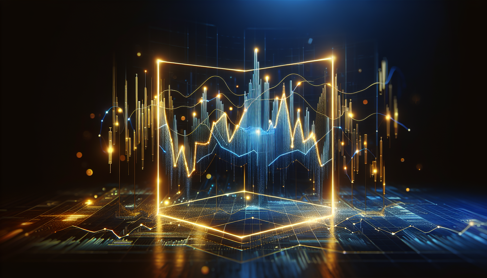
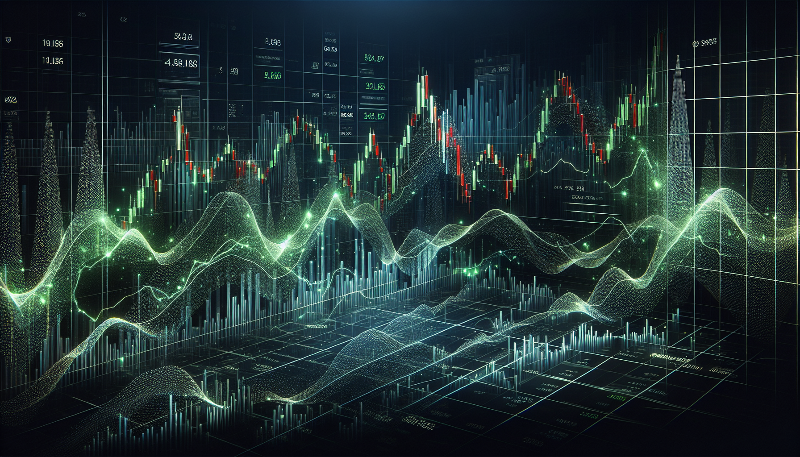

← Stage 索引
S&P 500 還能存？因為AI浪潮 這位投資達人悄悄調整了三件事
Stage 審閱中
② 影片預覽
③ 章節背景圖

00 · 開場
0:00 → 0:25

01 · S&P 500風險
0:25 → 1:38
02 · 全球分散
1:38 → 2:37
03 · 黃金與現金
2:37 → 4:00
④ YouTube 封面
🖼 YOUTUBE 封面
⬇ 下載封面
1280×720
暗色金融風
Mark Tilbury 頭貼
設計說明
Speaker
MARK TILBURY
大標
S&P 500
AI 讓他改變了
主文
三個投資
調整策略
副標
40% 集中風險・全球分散・黃金配置
時長
5 分鐘重點解析
⑤ YouTube 文案
▶
愛播客 — YouTube 發布文案
⏳ 待審閱
標題
S&P 500 還能存？因為AI浪潮 這位投資達人悄悄調整了三件事
描述
在這段影片中，著名投資專家 Mark Tilbury 分享了因 AI 浪潮而悄悄調整的三件事：S&P 500 集中風險、全球分散策略，以及黃金與現金配置。 🔑 本集重點： 1. S&P 500 每 1 元有 40% 流向前 10 大公司，估值建立在 AI 預期上 2. 歷史沒有永遠的霸主——全球基金自動跟著重心調整 3. 巴菲特囤現金 3,730 億、黃金升格一級資產，背後的訊號 📌 時間章節： 00:00 開場 00:25 S&P 500 風險 01:38 全球分散 02:37 黃金與現金 📺 原始來源： Mark Tilbury — I'm Changing How I Invest My Money Because of AI https://youtu.be/O8t50OxsfB8 ⚠️ 免責聲明：以上內容為個人整理和想法，不構成任何投資建議。投資有風險，每個人的財務狀況不同，做決定前請自行評估或諮詢專業顧問。 🎙 94iVoice — AI 與科技深度解析 歡迎訂閱 → https://www.youtube.com/@94ivoice #投資 #理財 #SP500 #AI投資 #MarkTilbury #黃金 #ETF #94iVoice #愛播客
腳本
「每 1 元投資在 S&P 500 指數中，就有 40% 流往前十大公司。」說這話的是 Mark Tilbury，他是一名知名的投資專家與YouTube 創作者。他在這支影片談了三件事：S&P 500 的集中風險、全球分散的策略，以及黃金與現金的配置策略。五分鐘，我幫你說清楚。 Mark 提到了當前 S&P 500 指數的集中風險：每投入 1 元，其中 40% 流入 Nvidia、微軟、蘋果、Google、Amazon、Meta 等前十大公司。根據他的分析，這些公司幾乎都在押寶人工智慧，要支撐這些公司的高估值，每年至少需要 2 兆美元的收入，但 2024 年這些公司的合計實際收入才約 1 兆美元。我特別查了一下，到 2025 年底這個集中度已經超過 40%——比影片拍攝時還要更高。簡單說，這就像一家餐廳的估值已達 1 億美元，但它每年才賺 500 萬，投資人相信「未來會爆賺」才願意持有。Mark 指出，這就導致投資人其實是在賭還沒發生的未來。很多人選擇等權重 S&P 500 作為替代方案，計劃用賣掉過去漲最好的公司、補進漲不好的股票來解決這個問題。但他認為這長期看來不划算，因為犧牲了成長潛力。分散不能只靠換一種美國指數，他開始看向更遠的地方。 Mark 轉而談到全球分散，他指出歷史已經證明，沒有永遠的霸主。例如，1900 年時，英國占全球股市 24%，當時被稱為「倫敦時代」。再來是 1980 年代的日本，當時幾乎所有人都以為未來是日本的。然而，我們看到的現實情況並非如此。現在則是美國主導，但 Mark 不願賭美國會永遠維持這個地位。他選擇投資於全球基金 VWRP，這基包括 3700 家公司涉及 45 個國家，費率僅為 0.19%。這型基金會自動調整比重：當某國家崛起，基金就會跟著調整。換句話說，這就像分散押注多個國家的代表隊，而不僅僅是賭美國奪金。分散股票是一層，但他還做了另一層保護措施。 Mark 提到另一層保護措施涉及黃金與現金。他指出，中國近年來大量囤積黃金，現在全球央行持有的黃金已超越美國國債，這是自 1996 年來首次。黃金在 2025 年被正式升格為銀行的一級資產，地位等同於現金。簡單來說，這就是說銀行現在可以把黃金當作現金一樣計算，需求自然大增，黃金的價值也會水漲船高。他補充說，連「股神」巴菲特在影片拍攝時都手握 3,477 億美元現金，準備等崩盤再進場。我查了一下，到 2025 年底這個數字已經漲到 3,730 億——他不只沒買，反而繼續在賣。這個訊號我覺得很值得注意。Mark 的策略是以 S&P 500 為主要持股，同時配置全球基金、小型股、黃金和現金。簡言之，這不是預測，而是準備好面對兩種結果——漲了也能賺，跌了也能撐得住。 最後補充一句：以上都是我看完影片的個人整理和想法，不構成任何投資建議。 AI 在改變世界，我們一起慢慢搞懂它。下次見。